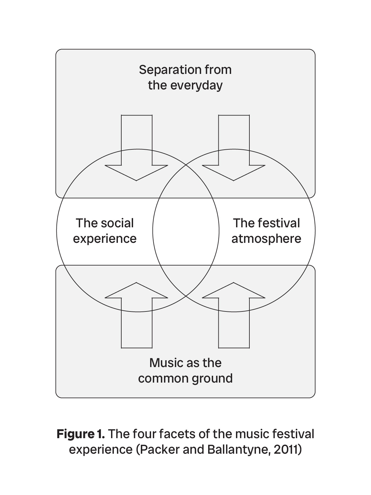
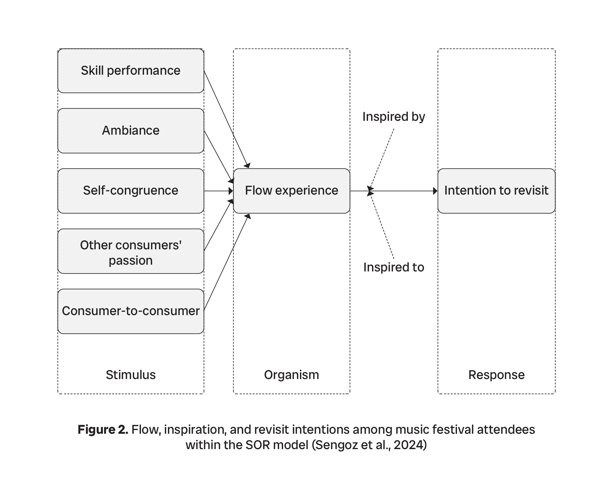
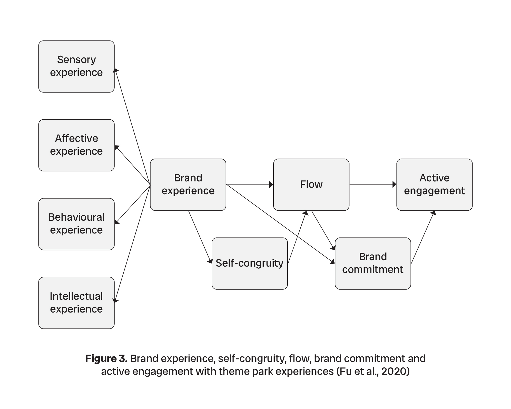
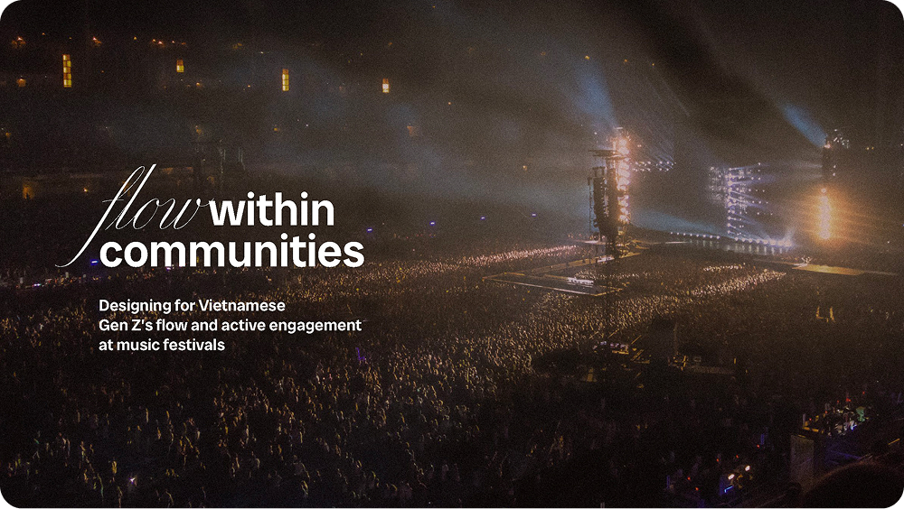

FestWatch
Designing for Vietnamese Gen Z’s flow and active engagement at music festivals
Master’s thesis
Service Design Strategies & Innovations (SDSI) programme
Finished and defended at the Estonian Academy of Arts
Partner
Nhung Thanh Pho Mo Mang - City of Miracle
Industry
Events, Entertainment
Discipline
Service Design, UX/UI
Deliverables
Service Blueprint
Clickable Prototypes
Concept Video
Written Thesis Paper
Year
2025
This work seeks to improve music festival experiences for the Vietnamese audience in terms of music-listening flow, self-congruence, and a sense of community. Very few music festivals in Vietnam have reached the level where the Vietnamese audience considers it a must to pay to attend live. People are accustomed to receiving free tickets to go to music concerts, going if they have free time, or deciding to go based on the weather conditions, which means there is passivity in their behaviour and willingness to pay. To make changes and promote development in the music industry, we not only ask for audience participation but also need to create the needs, thus expanding our market.
Following a service design process, I collected data from Vietnamese Gen Z individuals who had attended at least one music festival in Vietnam and through in-depth interviews, online probes, and user testing for prototyping. The findings revealed that a lack of seamless music-listening experience hinders attendees from actively engaging with the atmosphere and disrupts the conditions necessary for positive collective experiences, including the shared passion and interaction among attendees.
The research proposes a new service, FestWatch, a wearable device designed to enhance the experiences of festival attendees. It aims for seamlessness, active engagement, and a stronger sense of community through music. Organisers can encourage a music-listening flow by integrating attendees’ own values and personalities into the festival experience with this device, making participants contributors to the shared atmosphere.
I began by examining three theoretical frameworks that carefully interpret the experiences of festival-goers. This helped me gain a solid understanding of the attendees’ motivations and behaviours as a basis for an in-depth interview process.



Prior to the attendees’ interviews, I interviewed a representative from the City of Miracle to gather insights from the organiser’s perspective, thus identifying commonalities between the two stakeholders:
Q1. How did the City of Miracle start?
Q2. What is the planning process for one of your events?
Q3. What difficulties have you and your team encountered?
Q4. What are your future plans?
With the target audience of Vietnamese Gen Z aged 18-29 who have attended and experienced the City of Miracle festivals, I conducted semi-structured interviews with seven core questions:
Q1. Why did you decide to go to music festivals?
Q2. How was your whole journey from the start until the end?
Q3. How did you enjoy the music there?
Q4. How was the atmosphere there?
Q5. How did you feel after the shows?
Q6. Have you gone to any festivals before?
Q7. How can you design a music festival on your own?
The goal in this stage was to address the problems, challenges, and opportunities associated with the music festival experience and live music-listening experience in Vietnam, providing answers to the research questions (RQs). I then classified the main interview findings under these categories: Ambiance – the festival atmosphere created by visuals, sounds, crowd energy, etc.; Other consumers’ passion – how the attendees’ experiences influenced by the passion of other people; and Consumer-to-consumer interaction (CCI) – the reciprocal influence or communication between attendees that occurs when they wait together and share the same space and time.
RQ1: What creates a music-listening flow experience for Vietnamese Gen Z when they attend festivals?
1. Respectful and engaging attitude of attendees;
Ambiance
Other consumers’ passion
CCI
2. Passionate fan connections;
CCI
3. Venue navigation with ease and comfort;
Ambiance
4. Timely information and announcements;
Ambiance
5. Reasonable stage setup times, smooth stage transitions with enjoyable breaks;
Ambiance
6. A feeling of being comfortable, safe and protected during the festival.
Ambiance
Other consumers’ passion
RQ2: How does a music-listening flow experience facilitate festival-goers’ active engagement?
The second RQ concerns the remaining category: self-congruence. To explore further, I placed it in online probes of "a city of music", which can be seen as a parallel version of everyday life, but with music as the central focus. Through this method, I learnt about how music circulates around people’s self-images and daily activities.
The answers provided valuable insights into not only a desired festival-going experience but also a shared passion for musical experiences of 21 research participants. It helped prove that the stronger the match between attendees and the service environment, the more likely they are to achieve an optimal experience, or a flow state, which eventually leads to a commitment to the service and active engagement beyond using it.
One’s own image that presents one’s values, lifestyle or personal beliefs
Self-congruence
Physical and service environments of a festival that serve to match as much as possible with an attendee’s own image
With a How Might We (HMW) question, “HMW utilise self-congruence, ambiance, other consumers’ passion, and consumer-to-consumer interaction (CCI) to create a music-listening flow experience for Vietnamese Gen Z attendees at festivals?”, I defined an opportunity statement to inform the design concept development:
By integrating attendees’ own values and personalities into the festival experience to make them contributors to the shared atmosphere, we can encourage a music-listening flow during the event, fostering active engagement and contributing to a stronger sense of unity through music.
Through solo ideation, I employed the Crazy 8’s technique and abductive thinking to generate 16 ideas, which I then further examined by categorising them into archetypes: Shaping, Incremental, Tangent, Bridging, Combinatorial, and Final Combinatorial. Finally, I arrived at the idea of a watch device – FestWatch. After the first initial prototyping followed by two rounds of testing, I iterated on a design, which:
To conceptualise the new service within the attendee journey and festival management, I built a service blueprint to illustrate a typical service journey of a festival attendee. It comprehensively visualises the proposed service system with the watch device, demonstrating a logical flow and identifying key touchpoints. As the blueprint maps the service assuming the watch functions as intended, its credible evaluation rests on the feasibility and effectiveness of the watch concept, which requires more testing and iterations in real-life cases.
Documentation

SDSI master’s thesis “Flow within Communities”